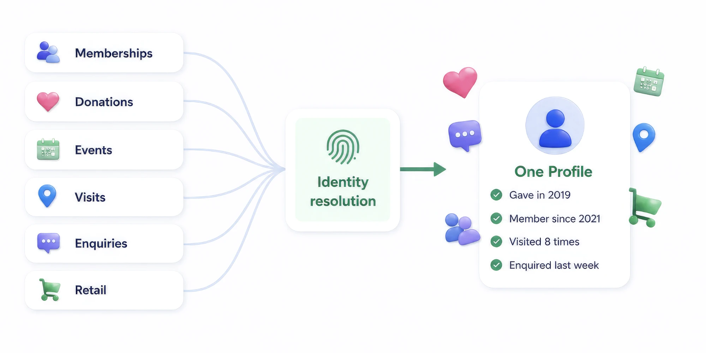

Heritage New Zealand can see the whole relationship, not a fragment of it.
A supporter who joins, gives, visits a property, books an event and buys something in the shop used to be five records in five places. Enable unified them on Data 360 and put the resulting profile in front of the people who need it, in production.

The organisation
Heritage New Zealand Pouhere Taonga is the Crown entity responsible for identifying, protecting and promoting New Zealand’s historic places. It cares for properties the public visits, maintains the national list of heritage places, and is supported by members, donors and volunteers.
That breadth is the interesting part. The same person might hold a membership, give to an appeal, walk through a property on a Sunday, book a school visit, send an enquiry about a listing, and buy a book in the shop. Six relationships, one human being.
The situation
Every one of those interactions was being recorded. None of them were being recorded together. Answering a question as ordinary as “has this person supported us before” meant opening several systems and making a judgement call about whether three similar-looking records were the same person.
Everyone knew this. What did not exist was a route through it that began with a multi-year data warehouse programme, which for a Crown entity with public funding is a hard thing to justify and a harder thing to finish.
What we built
Modelled to the standard data model
Source systems mapped onto the Customer 360 data model rather than a bespoke schema. That decision is unglamorous and it is the one that decides whether the thing still makes sense to the next person who touches it, or needs remapping every time a source changes.
Ingestion and harmonisation in Data 360
Memberships, donations, event bookings, property visits, enquiries and retail brought into Data 360 and harmonised, so that a date is a date and a person is a person regardless of which system spelled it which way.
Identity resolution tuned against real records
A ruleset built and tested on the actual data, including households, shared email addresses, and people who have been in the database since the nineties under three spellings of the same name. Match results were reviewed with staff who know the constituents, not signed off against a metric.
Unified profile activity
The engagement history brought together so a single view shows what a person has actually done, in order, regardless of which system recorded it. This is the part users notice, and the part that makes the rest of the work legible to people who were never going to read a data model.
Surfaced where the work happens
The unified profile exposed on the records staff already use, rather than in a separate analytics tool nobody opens. A capability that requires a second login is a capability that gets used twice.
Deployed to production, with tests
Apex covered per class and deployed against the production org with specified tests, not left as a sandbox proof of concept for someone to productionise later. Production is where this either works or does not.
What changed
The question is answerable
“Have we talked to this person before, and about what?” is now one screen instead of three people checking three systems and comparing notes in a meeting.
Data quality became visible
Resolution surfaces the duplicates everyone suspected and nobody could count. That is uncomfortable and useful in roughly equal measure, and it gives the next cleanup an actual target.
A foundation, not an endpoint
Segmentation, agent grounding and personalisation all need a resolved profile underneath them. Building it first makes every one of those conversations shorter, and cheaper.
What we would tell you
Identity resolution is where this kind of project succeeds or quietly fails, and it cannot be done well from a spreadsheet of field mappings. Budget real time for sitting with the people who know the constituents. They will spot a bad match in a second that a rule would have accepted forever.
Data 360 consumption is real money. We would rather model it with you before you commit than explain the bill afterwards, and for a publicly funded organisation that conversation needs to happen in writing, early.
And a production deployment has its own teeth. Data 360 hands back timestamps with a trailing time zone that naive parsing will choke on, Apex must clear coverage per class rather than on average when you deploy with specified tests, and the platform will reject a field name you assumed was yours to use. None of that appears in a demo. All of it appears on a Friday afternoon.
Recognise any of this?
If your supporters turn up in six systems and none of them agree, the first conversation is free and usually tells us both whether there is a project here.
Published with Heritage New Zealand Pouhere Taonga’s agreement.